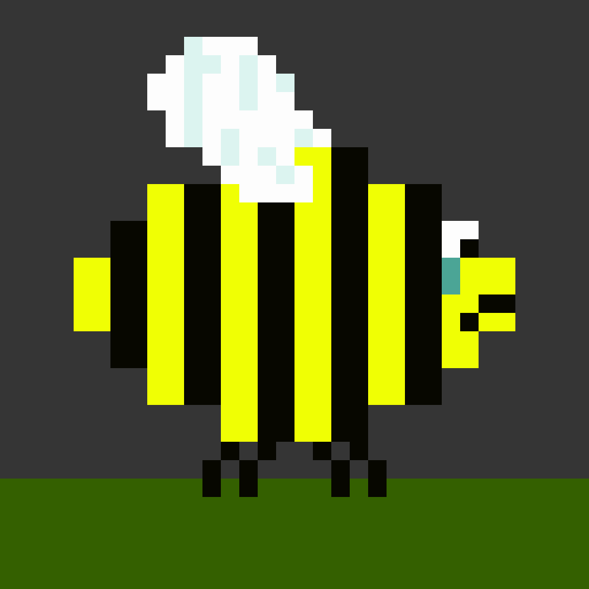

Piskel. Almost Piskel.
It is a free online editor for animated sprites & pixel art
Create animations in your browser.
Use Google sign in, save sprite as png, or simply create.

This is an educational project of the Rolling Scopes School by Eryka Shakhalevich.